Глава 4. Настройка сети
Мы охватим следующие разделы в данной главе:
-
Настройку основной сети
-
Настройку моста
-
Настройку виртуальной сети
-
Настройку сетевого связывания
-
Настройку сетевой трансляции адресов
-
Настройку Infiniband
-
Настройку сетевого интерфейса виртуальной машины
-
Настройку высокой доступности
Содержание
В данной главе мы собираемся рассмотреть как настраивается сетевая среда Proxmox. Сетевая среда выступает в качестве клея при связывании виртуальных машин друг с другом, а также с кластером. Как и многие другие гипервизоры, Proxmox применяет модель сетевой среды с мостами.
.
Приготовление
В данном рецепте мы собираемся рассмотреть настройку сетевой среды Proxmox. Последующие рецепты в данной главе охватят различные компоненты сетевой среды.
Как это сделать...
Перед углублением в настройку сети, важно узнать, что конфигурация сети может быть выполнена в Proxmox как через графический интерфейс, так и в командной строке. Настройки, выполняемые в графическом интерфейсе потребуют для активации перезагрузки, в то время как настройки через интерфейс командной строки могут приниматься в реальном времени.
Настройки, применяемые через графический интерфейс, записываются в файл сетевых настроек
/etc/network/interfaces.new. После перезагрузки узла новые настройки переносятся на постоянное
место в /etc/network/interfaces. Если перезагрузка узла недоступна прямым способом,
настройка должна выполняться через интерфейс командной строки путем непосредственного изменения
/etc/network/interfaces.
Вот шаги для настройки сети посредством графического интерфейса Proxmox:
-
Для изменения сетевых настроек в графическом интерфейсе, зарегистрируйтесь в качестве root в GUI Proxmox.
-
Кликните на узел, чтобы увидеть меню с закладками
Network, как показано на следующем экранном снимке: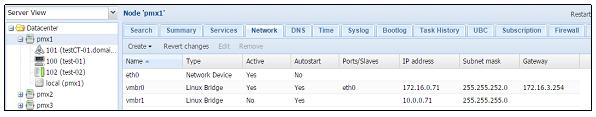
-
Чтобы создать новый сетевой интерфейс, кликните на
Createдля отображения ниспадающего меню, как показано на следующем снимке экрана: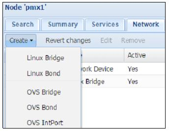
![[Замечание]](../common/images/admon/note.png)
Замечание Отметим, что в графическом интерфейсе Proxmox мы можем создавать только мост и подключать интерфейсы. Любые физические интерфейсы, установленные в нашем хосте могут только настраиваться, но не создаваться.
Когда изменение выполнено в графическом интерфейсе, возникнет
Pending changes(отложенные изменения) до начала перезагрузки, как показано на следующем снимке экрана: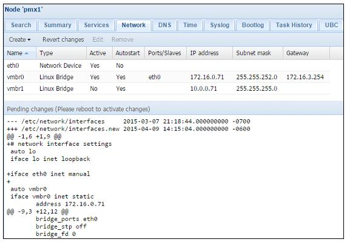
-
Для возврата изменений до перезагрузки просто нажмите на
Revert changes. Это отменит изменения в/etc/network/interfaces.new.
Следующие шаги необходимы в случае настройки сети через интерфейс командной строки Proxmox:
-
Зарегистрируйтесь вузле Proxmox с применением программы SSH, подобной PuTTY.
-
Откройте при помощи редактора
/etc/network/interfaces. -
Внесите необходимые изменения в настройку. Например, если мы хотим настроить второй сетевой интерфейс в нашем узле со статическим IP, мы сделаем следующие изменения:
# nano /etc/network/interfaces auto eth2 iface eth2 inet static address 192.168.1.1 netmask 255.255.255.0 gateway 192.168.1.254 bridge_ports eth2 bridge_stp off bridge_fd 0 #ifup eth2
-
Сохраним изменения и покинем редактор.
-
Приведем новый интерфейс в действие выполнив следующую команду:
#ifup eth2
![[Совет]](../common/images/admon/tip.png) | Совет |
|---|---|
|
Если изменения были выполнены для существующего интерфейса, будет необходимо отключить интерфейс с применением следующей команды, после чего перевести его опять во включенное состояние: #ifdown eth2 |
Есть кое-что еще...
В Proxmox VE 3.4 физический интерфейс не может настраиваться напрямую для определенной виртуальной машины. Все виртуальные машины должны настраиваться через мост или сетевую связь (bond). Это относится как к виртуальным машинам, так и к контейнерам OpenVZ {Прим. пер.: Proxmox VE 4.x: LXC}.
В данном рецепте мы собираемся ознакомиться с тем, чем является мост в Proxmox и как его настраивать для создания виртуальной сети виртуальной машины.
Приготовление
Мост является виртуальной реализацией физического сетевого
коммутатора. Виртуальные машины могут присоединяться к мосту во
многом аналогичным способом, которым физический компьютер может быть
присоединен к сетевому коммутатору, служащему для соединения сетевых
устройств. Именуемым обозначением для интерфейса моста является vmbrX, где
X может быть целым числом от 0 до максимум 4096. По умолчанию новая установка Proxmox
создает мост с именем vmbr0 в каждом узле.
Каждый мост может быть подключен к физическому сетевому интерфейсу узла или остаться без него. Мост настраиваемый без какого- либо физического сетевого интерфейса не может осуществлять прямой обмен за пределами самого узла. Обмен может осуществляться только между любыми виртуальными машинами, подключенными к этому мосту без физического интерфейса. Следующая схема показывает сетевую диаграмму моста без физического сетевого интерфейса:
На предыдущей диаграмме VM 1,
VM 2 и VM 3
напрямую соединены с мостом vmbr0. Этот мост настроен с
сетевым физическим интерфейсом eth0, который подключен к
физическому коммутатору. VM 4 настроен в качестве виртуального
межсетевого экрана, который имеет два виртуальных сетевых интерфейса, net0
и net1. Интерфейс
net0 подключен к мосту
vmbr0, а интерфейс
net1 подключен к мосту
vmbr1вместе с
VM 5 и VM 6.
Мост vmbr1 не настроен на работу ни с какими физическими интерфейсами,
следовательно, VM 5 и
VM 6могут взаимодействовать только друг с другом и
VM 4.
Только один физический сетевой интерфейс может быть настроен на работу с мостом. Используемый для моста интерфейс не может быть использован другим мостом. Путем создания множества мостов для групп виртуальных машин мы можем создавать изолированные виртуальные сети в пределах одной и той же виртуальной среды. Применение межсетевого экрана для каждой группы виртуальных машин может открыть доступ в интернет без компрометации изоляции.
Как это сделать...
Следующие шаги необходимы для создания виртуального моста с применением графического интерфейса Proxmox. Для нашего примера
мы собираемся создать мост с именем vmbr1 без физического сетевого интерфейса:
-
Выберите узел в левом обзоре навигации, в котором должен быть настроен мост.
-
Кликните на закладку меню
Network. -
Кликните на
Createдля открытия ниспадающего меню, затем выберитеLinux Bridgeдля открытия блока диалога создания моста, как показано на следующем снимке экрана: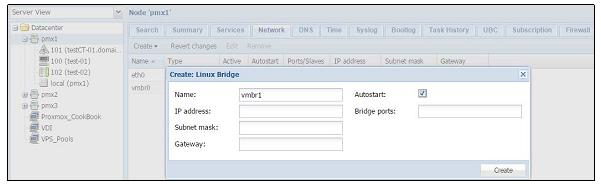
-
Для моста без физического интерфейса мы собираемся оставить все все блоки пустыми за исключением текстового блока
Name. Чтобы назначить мосту физический интерфейс просто введите имя интерфейса, такое какeth0,eth1и тому подобных, в текстовом блокеBridge Ports. -
После введения необходимой информации кликните на
Createдля завершения создания мостаvmbr1.Следующий экранный снимок показывает только что созданный мост с отложенной перезагрузкой после сделанных в графическом интерфейсе Proxmox изменений:
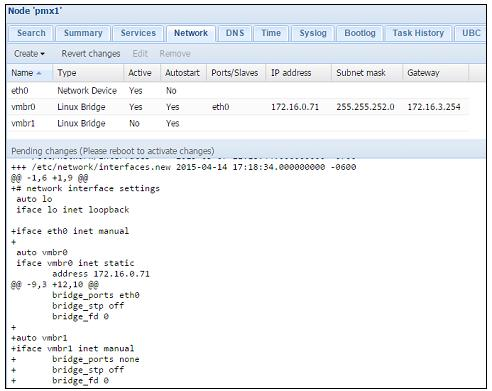
Следующие шаги необходимы при создании виртуального моста посредством интерфейса командной строки:
-
Зарегистрируйтесь в узле Proxmox через SSH или непосредственно в консоли.
-
Откройте редактором файлы сетевой настройки из
/etc/network/interfaces. -
Добавьте новый мост со следующим форматом настройки. В нашем примере мы добавляем новый виртуальный мост с именем
vmbr1:auto vmbr1 iface vmbr1`inet manual bridge_ports none bridge_stp off bridge_fd 0 #ifup vmbr1
-
Сохраните изменения и покиньте редактор.
-
Активируйте мост следующей командой:
#ifup vmbr1
Как это работает...
Настройка моста является зависящей от узла. Например, если существует мост с именем vmbr1 в
узле node 1, в месте подключения VM 2, то, если мы
собираемся осуществлять миграцию VM 2 на узле node 2,
мы должны создать другой мост vmbr1
на этом узле. Если мост присоединен к физическому
интерфейсу, который соединен через коммутатор с другими узлами
Proxmox в кластере, то будет возможно взаимодействие между
виртуальными машинами на множестве узлов. Мост без физического
сетевого интерфейса ограничен только узлом, на котором он размещен.
В качестве хорошей общей практики рекомендуется дублировать настройки моста на всех узлах Proxmox с тем, чтобы миграция виртуальных машин могла осуществляться с минимальным временем простоя.
Есть кое-что еще...
Для создания виртуальной сети любого размера существенным является хорошее понимание мостов. Если у вас есть доступ кластеру Proxmox, и понимание того, как создавать мосты, будет полезным потратить некоторое время на создание нескольких мостов на различных узлах на практике вручную. Вот пример сетевой диаграммы вымышленной компании поставщика облачных услуг в которой широко применяются мосты:
Виртуальные сети (VLAN, VLAN)
являются сетевым стандартом
на основе 802.1q для создания логических разделов в одном и том же
сетевом интерфейсе для изоляции обмена множества сетей. В данном
рецепте мы рассмотрим как настроить виртуальные сети в сетевой среде
Proxmox.
Приготовление
Чтобы виртуальная сть могла работать, физический коммутатор в сетевой среде должен поддерживать виртуальные сети. Почти все интеллектуальные (smart) и управляемые коммутаторы имеют возможности виртуальных сетей (VLAN). Проверьте руководство вашего коммутатора перед настройкой виртуальной сети в Proxmox. Следующий снимок экрана показывает панель управления smart, который является 48- портовым гигабитным интеллектуальным коммутатором с поддержкой виртуальных сетей:
Каждой виртуальной сети присваивается уникальный номер, называемый дескриптором виртуальной сети
(VLAN tag).
Допускается максимум в 4096 дескрипторов.
Дескриптор (тег) является уникальным для логической сети или для
каждой виртуальной сети в одной и той же сетевой среде. Любое
сетевое устройство или интерфейс в сети настраиваемые с каким-то
тегом виртуальной сети смогут взаимодействовать только с
устройствами или интерфейсами с тем же самым тегом виртуальной сети,
тем самым сохраняя изолированность сетевого обмена. Сетевые
пакеты получают отметку от коммутатора с определенным дескриптором
(тегом) виртуальной сети.
|
| Замечание |
|---|---|
|
Для получения подробностей о виртуальных сетях посетите http://en.wikipedia.org/wiki/Virtual_LAN. {Прим. пер.: http://ru.wikipedia.org/wiki/Virtual_LAN}. |
Как это сделать...
В Proxmox существует два способа которыми мы можем назначать виртуальные сети виртуальной машине. Они следующие:
-
Назначение тега виртуальной сети каждому сетевому интерфейсу виртуальной машины. Это может быть сделано через графический интерфейс.
-
Создание субинтерфейса виртуальной сети и выделенного виртуального моста. Это должно быть выполнено в интерфейсе командной строки.
|
| Замечание |
|---|---|
|
Обе процедуры имеют в итоге аналогичные виртуальные сети. Однако, в зависимости от сценария варианта применения одному может отдаваться предпочтение перед другим. При назначении тега виртуальной сети каждому сетевому устройству виртуальной машины сами виртуальные машины могут взаимодействовать напрямую с коммутатором. При субинтерфейсе виртуальной сети и выделенном мосте каждая виртуальная машина соединяется с помеченным дескриптором мостом виртуальной сети и никакая индивидуальная пометка виртуальных машин не нужна. |
Следующие этапы применяются при назначении тегов виртуальной сети каждому сетевому интерфейсу виртуальной машины в отдельности через графический интерфейс Proxmox:
-
Выберите узел в левой колонке навигации.
-
Кликните на закладку меню
Hardware, затем выберитеNetwork Device. -
Кликните на
Editдля открытия блока диалога, как это показано на следующем снимке экрана: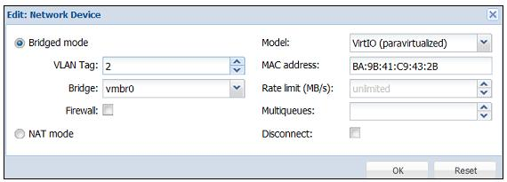
-
Введите численное значение идентификатора виртуальной сети в текстовом блоке
VLAN Tag. В нашем примере мы добавили идентификатор виртуальной сети 2. -
Кликните
OKдля завершения. -
Выполните цикл выключения- включения для активации тега виртуальной сети.
Следующий экранный снимок демонстрирует сетевой интерфейс виртуальной сети с добавленным тегом VLAN:
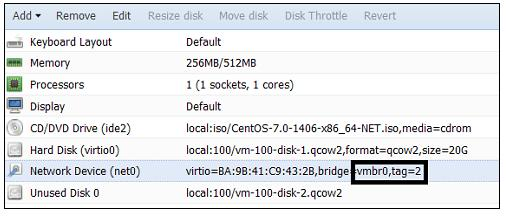
Последующие шаги показывают как создавать субинтерфейс виртуальной сети и выделенный мост для VLAN с применением интерфейса командной строки:
-
Зарегистрируйтесь через SSH или PuTTY в качестве root или с аналогичными правами администратора.
-
С применением текстового редактора откройте файл сетевой настройки хоста Proxmox:
#nano /etc/network/interfaces
-
Добавьте следующие строки для создания субинтерфейса виртуальной сети. Измените интерфейс согласно вашему сетевому окружению. В нашем примере используется интерфейс
eth2для создания субинтерфейса виртуальной сети для VLAN с дескриптором 2:auto vlan2 iface vlan2 inet manual vlan_raw_device eth2 auto vmbr2 iface vmbr2 inet manual bridge_ports vlan2 bridge_stp off bridge_fd 0 -
Сохраните изменения и покиньте текстовый редактор.
-
Выполните следующие команды для активации субинтерфейса виртуальной сети и моста без перезагрузки:
#ifup vlan2 #ifup vmbr2
-
Назначьте данный мост вашей виртуальной машине, как показано на следующем снимке экрана:.
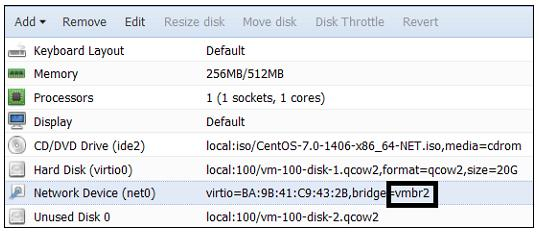
Как это работает...
В сценарии при котором виртуальная сеть назначается каждому виртуальному сетевому интерфейсу виртуальной машины, все виртуальные машины присоединяются к одному мосту.
При создании субинтерфейсов виртуальных сетей мы можем создавать
множество мостов для множества виртуальных сетей в одном и том же
физическом сетевом интерфейсе. Далее приводится содержание сетевых
настроек в /etc/network/interfaces,
в котором созданы три субинтерфейса виртуальных сетей поверх одного интерфейса физической сети через три выделенных моста:
auto vlan10 iface vlan10 inet manual vlan_raw_device eth1 auto vlan20 iface vlan20 inet manual vlan_raw_device eth1 auto vlan30 iface vlan30 inet manual vlan_raw_device eth1 auto vmbr10 iface vmbr10 inet manual bridge_ports vlan10 bridge_stp off bridge_fd 0 auto vmbr20 iface vmbr20 inet manual bridge_ports vlan20 bridge_stp off bridge_fd 0 auto vmbr30 iface vmbr30 inet manual bridge_ports vlan30 bridge_stp off bridge_fd 0
При назначении мостам имен будет хорошей мыслью назначать теже номера, что и идентификаторы виртуальных сетей. Таким образом будет легко распознавать к какой виртуальной сети подключен мост.
Сетевое связывание (bonding), образование групп (trunking) или агрегация связей (link aggregation) является процессом, при котором различные сетевые интерфейсы объединяются для создания большей пропускной способности или реализации отказоустойчивости для связности сетевой среды. В данном рецепте мы собираемся рассмотреть типы связывания и того, как создавать связные конфигурации.
Приготовление
Перед настройкой связывания важно понять типы или различные режимы связывания которые доступны и что они предлагают. Только один тип связывания может быть настроен в определенный момент времени. Следующая таблица показывает типы связывания и их свойства Отметим, что данная таблица служит исключительно для информационных целей:
| Режим | Свойство | Устойчивость к отказам | Специальный коммутатор |
|---|---|---|---|
0 |
|
Да |
Нет |
1 |
|
Да |
Нет |
2 |
|
Да |
Нет |
3 |
|
Да |
Нет |
4 |
|
Да |
Да |
5 |
|
Да |
Нет |
6 |
|
Да |
Нет |
Методы связывания 2 и 4 применяют алгоритмы хеширования для передачи сетевых пакетов. Вот три политики хеширования, доступные при связывании Proxmox:
| Политика хеширования | Описание |
|---|---|
|
Эта политика посылает пакеты данных в сетевое устройство на том же участнике порта. Хеш образуется с применением XOR MAC адресов. |
|
Эта политика посылает пакеты данных в сетевое устройство на том же участнике порта. Хеш образуется с применением XOR MAC адресов и IP адресов. |
|
Эта политика посылает пакеты данных в сетевое устройство охватывая всех участников портов. Хеш образуется с применением информации протоколов верхнего уровня. |
Вне зависимости от различных режимов сетевого связывания процесс настройки аналогичен для всех режимов. Связываемый интерфейс может быть создан как в графическом интерфейсе Proxmox, так и в интерфейсе командной строки.
Как это сделать...
Перед тем как связывание можно будет применить в Proxmox, существуют некоторые модули, подлежащие загрузке в ядро. Они следующие:
-
Модуль
bonding -
Модуль
mii
Мы можем вставить их в процессе загрузки путем добавления в отдельные строки в /etc/modules.
Для проверки того доступны модули связывания для загрузки или нет мы можем выполнить в командной строке следущее:
#modprobe bonding
Если модуль не найден, то мы должны установить ifenslave следующей командой:
#apt-get install ifenslave-2.6
Последующие шаги показывают как создавать связанный интерфейс через графический интерфейс Proxmox:
-
Выберите узел из левой колонки навигации.
-
Кликните на закладку меню
Hardware, затем выберитеNetwork Device. -
Кликните на
Editдля открытия блока диалога, как показано в следующем снимке экрана: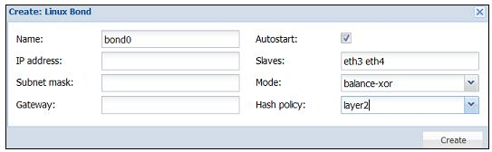
-
Введите в блоке диалога необходимую информацию. Все порты, которые предполагается использовать как часть связи должны быть введены в текстовом блоке
Slavesразделенные пробелом. Если выбран режим 2 или 4, то выберите также желаемую политику хеширования. В нашем примере мы имеем связь с именемbond0, которая включит в себя порты участниковeth3иeth4. Выбран режимbalance-xorс политикой хешированияlayer2. -
Кликните на
Createдля завершения. -
Перегрузите узел Proxmox для активации связывания.
Следующие шаги показывают как создавать связывание через интерфейс командной строки:
-
Зарегистрируйтесь через SSH или PuTTY в качестве root или с аналогичными правами администратора.
-
С применением текстового редактора откройте файл сетевой настройки хоста Proxmox:
#nano /etc/network/interfaces
-
Добавьте следующие строки для создания связанного интерфейса. Измените имена интерфейсов в соответствии с вашей средой В нашем примере мы используем для связывания интерфейсы
eth3иeth4:auto bond0 iface bond0 inet manual slaves eth3 eth4 bond_miimon 100 bond_mode balance-xor bond_xmit_hash_policy layer2 -
Сохраните изменения и покиньте текстовый редактор.
-
Выполните следующую команду для активации связанного интерфейса:
#ifup bond0
|
| Замечание |
|---|---|
|
Связанный интерфейс может применяться в мосте аналогично стандартному интерфейсу. Просто замените порт моста соответствующим связанным интерфейсом следующим образом: auto vmbr0 iface vmbr0 inet manual bridge_ports bond0 bridge_stp off bridge_fd 0 |
Есть кое-что еще...
Связывание может быть отличным, экономичным способом повышения общей пропускной способности сети или просто создает избыточное соединение сети для увеличения времени безотказной работы. Четкое понимание различных режимов склеивания поможет в выборе правильного режима для различных требований. Например, с помощью нескольких коммутаторов и сетевых интерфейсов, мы можем легко создать карусельную (round-robin) связь, которая обеспечит избыточность не только для сетевых кабелей, но и для сетевых коммутаторов. Сетевая среда может напоминать следующую диаграмму:
В предыдущем рисунке узлы Proxmox и хранилища Ceph соединяются двумя физическими коммутаторами. Сетевые интерфейсы во всех
узлах настраиваются со связыванием balance-rr. В данном сценарии в случае отказа коммутатора 1
все узлы продолжат свою работу с коммутатором 2.
Хотя она и работает, эта установка не рекомендуется для сред с критичным промышленным применением. В случае потери пакетов при данной политике, пакеты часто отсылаются повторно.
В данном рецепте мы собираемся рассмотреть чем является сетевая трансляция адресов (NAT,
Network Address Translation) и как ее настроить в Proxmox.
Приготовление
Сетевая трансляция адресов является техникой, которая делает возможным узлу с частным IP адресом в сети взаимодействовать с интернетом через интерфейс с задействованной NAT или через маршрутизатор без необходимости наличия общедоступного с точки зрения интернет IP адреса. Сетевая трансляция адресов также обеспечивает безопасность, поскольку исходный IP адрес остается скрытым за NAT.
Без сетевой трансляции адресов каждому устройству требовался бы общедоступный IP для соединения с интернетом. При нехватке адресов IPv4 и высокой стоимости их получения Сетевая трансляция адресов предоставляет решение для сетевых сред любых размеров.
В Proxmox настройка сетевой трансляции адресов может выполняться только через интерфейс командной строки.
Как это сделать...
Для того чтобы сетевая трансляция адресов работала, необходимо разрешить переадресацию (forwarding) IP адресов. По умолчанию она запрещена. Следующие шаги показывают как сделать доступной переадресацию IP адресов, а затем настройку сетевой трансляции адресов для сетевого интерфейса:
-
Примените текстовый редактор для открытия файла
/etc/sysctl.conf:#nano /etc/sysctl.conf
-
Уберите комментарий следующей строки:
net.ipv4.ip_forward=1
-
Сохраните изменения файла и перезагрузитесь для активации сделанных изменений.
-
Откройте настройку сетевого интерфейса в текстовом редакторе:
#nano /etc/network/interfaces
-
Добавьте и удалите настройки из интерфейса как показано далее. Внесенные в настройку изменения показаны жирным шрифтом:
auto vmbr0 iface vmbr0 inet static address 192.168.10.1 netmask 255.255.255.0 bridge_ports none bridge_stp off bridge_fd 0 post-up echo 1 > /proc/sys/net/ipv4/ip_forward post-up iptables –t nat –A POSTROUTING –s '192.168.10.0/24' –o eth0 –j MASQUERADE post-down iptables –t nat –D POSTROUTING –s '192.168.10.0/24' –o eth0 –j MASQUERADE
-
Сохраните файл настройки и перезагрузитесь для активации внесенных изменений.
Как это работает...
На основе настроек выполненных в предыдущем разделе весь обмен виртуального интерфейса vmbr0
проходит через eth0, в то время как вся информация об IP виртуальной машины остается скрытой
за мостом vmbr0.
Такой результат может быть достигнут с применением виртуального межсетевого экрана, в котором межсетевой экран работает как устройство сетевой трансляции адресов для виртуальной машины и интернета. Следует заметить, что хотя NAT обеспечивает сетевую безопасность, межсетевой экран будь он в физическом или виртуальном исполнении, всегда должен быть на своем месте.
В данном рецепте мы собираемся узнать что такое Infiniband и как он может быть настроен для создания сетевой среды с высокой пропускной способностью в кластере Proxmox.
Приготовление
Обладая очень низкой латентностью, Infiniband (IB),
конкурирует с гигабитным Ethernet, 10 GbE и 100 GbE {Прим. пер.: а также Fibre Channel
1-8GFC/16GFC/32GFC/128GFC}. Созданный в 1999 году, Infiniband продолжает предоставлять средства для создания
высокопроизводительных кластеров побивающих Ethernet как в латентности, так и по цене. {Прим. пер.: см.
определение латентности на parallel.ru}
IB является отличным выбором для подключения кластера хранения к
вычислительному кластеру в виртуальной среде. Linux
обеспечивает полную поддержку для IB. Для применения IB должны быть
загружены некоторые модули ядра. Сетевая настройка похожа
на конфигурирование любого другого интерфейса. Настройка IB должна
выполняться через интерфейс командной строки. Она не
может быть изменена или выполнена через графический интерфейс
Proxmox.
|
| Замечание |
|---|---|
|
Для получения дополнительной информации по Infiniband посетите http://en.wikipedia.org/wiki/InfiniBand. {Прим. пер.: http://ru.wikipedia.org/wiki/InfiniBand}. |
На следующем рисунке представлен пример адаптера Infiiband QDR производства Mellanox Technlogoies Inc.:
Существуют различные типы плат IB, различающиеся скоростями и латентностью. каждая категория имеет уникальное имя, идентифицируемое тремя буквами. Следующая таблица показывает различные соотношения IB:
Модель {Прим. пер.: год выпуска} |
Пропускная способность (Gbit/s) {Прим. пер.: скорость передачи сигнала одной шины, Gbit/s} |
Латентность (микросекунды) |
|---|---|---|
{2001-2003} |
10 {2} |
5 |
{2005} |
20 {4} |
2.5 |
{2007} |
40 {реально 32} {8} |
1.3 |
{2011} |
56 {14} |
0.7 |
{2014} |
100 {25} |
0.5 |
{ {2017?} |
200 {50} |
? |
Как это сделать...
Приведем шаги, которые покажут как загрузить модули IB и настроить сетевую среду для интерфейса Infiniband:
-
Зарегистрируйтесь в узле Proxmox через SSH или консоль в качестве root.
-
Добавьте следующие строки в
/etc/modulesдля загрузки модулей IB при загрузке:mlx4_ib ib_ipoib
-
В настройку интерфейса в
/etc/network/interfacesдобавьте приводимые ниже строки. Подправьте информацию IP на основе вашей среды:auto ib0 iface ib0 inet static address 192.168.10.1 netmask 255.255.255.0 pre-up echo connected > /sys/class/net/ib0/mode mtu 65520 -
Сохраните файл сетевых настроек и перезагрузитесь.
-
Проверьте состояние интерфейса IB выполнив команду:
#ibstat
Команда должна отобразить информацию аналогичную приводимой на следующем экранном снимке:
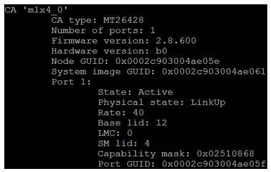
Если команда
ibstatотсутствует, установите инструментарий IB следующей командой:#apt-get install infiniband-diags
Следующий снимок экрана показывает настройки интерфейса IB в GUI Proxmox:
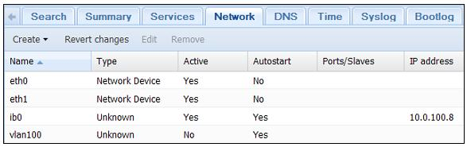
Как это работает...
IB использует совершенно другой протокол и набор аппаратных средств. Стандартные кабели Ethernet и коммутаторы не применимы к IB. Передтем как начать вкладываться в IB, рассмотрите существующую сеть на месте и то, как радикальное изменение на IB может повлиять на вашу повседневную работу. Также IB может быть добавлен в существующую сеть путем установки дополнительных плат IB в хосты.
Для нормального функционирования IB требуется менеджер подсети.
Менеджер подсети может быть интегрирован в коммутатор IB или он может
быть настроен на одном из узлов с интерфейсной платой IB. Установка и
работа менеджера подсети на узле является простейшим и наиболее
предпочтительным способом для наличия отказоустойчивости. Для
операционных систем на базе Linux менеджером подсети является
Opensm. Просто установите его на любом узле Proxmox, а затем
запустите его с применением следующих команд:
#apt-get install opensm #opensm
Opensm стартует и просканирует подключенный коммутатор IB, а
также другие подключенные к коммутатору интерфейсы.
В Proxmox VE 3.4 существует возможность настройки виртуальных сетей поверх IB. Он может иметь только одну подсеть в определенный момент времени.К тому же порты IB не могут связываться в состоянии активный-активный. Только один порт может быть активным во всех случаях. Следовательно, единственной причиной для связывания портов IB будет реализация отказоустойчивости, а не увеличение пропускной способности.
В данном рецепте мы собираемся рассмотреть различные модели виртуальных сетевых интерфейсов, доступные для применения с виртуальными машинами и то, как настраивать их свойства.
Приготовление
В Proxmox VE 3.4 существует четыре модели виртуальных сетевых интерфейсов, доступных для виртуальной машины:
-
Intel E1000
-
VirtIO (частичная виртуализация, paravirtualized)
-
Realtec RTL8139
-
VMWare vmxnet3
Из всех четырех приведенных, наиболее широко применяются в среде Proxmox интерфейсы Intel E1000 и VirtIO. Для достижения максимальной производительности сети рекомендуется применение VirtIO. Почти все операционные системы на базе Linux автоматически настраивают какие- либо виртуальные сетевые интерфейсы. Однако носители с установкой операционной системы Windows не поставляются с драйвером VirtIO, который должен быть загружен вручную. Для Intel E1000 встроенные в Windows 7 и Windows Server 2008 драйверы работают прекрасно. Однако более ранние версии Windows или, в некоторых случаях, драйверы Windows Server 2012, могут потребовать установку вручную.
Как это сделать...
Ниже излагаются этапы выгрузки драйверов VirtIO и Intel E1000 с последующей их загрузкой в виртуальную машину на базе Windows:
-
Перейдите на https://downloadcenter.intel.com/download/22283/IntelEthernet-Connections-CD для выгрузки последнего драйвера VirtIO в вормате ISO.
-
Перейдите на http://www.linux-kvm.org/page/WindowsGuestDrivers/Download_Drivers для выгрузки последнего драйвера Intel E1000 в вормате ISO.
-
Выгрузите ISO в доступное хранилище образов ISO. Отсылаем вас к рецепту Управление ISO и шаблонами OpenVZ в Главе 3. Управление кластером и виртуальными машинами для ознакомления с подробностями по выгрузке образов. Следующий снимок экрана отображает образы ISO после их выгрузки в хранилище:
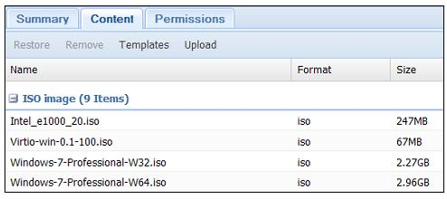
-
Загрузите образ ISO в виртуальную машину как показано на следующем экранном снимке:
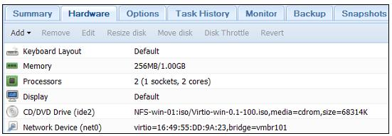
-
Выключите виртуальную машину если она еще включена, затем установите необходимый драйвер из ISO с применением
Control Panel | Device Manager.
Высокая доступность Proxmox (HA, High Availability)
делает
возможной автоматический запуск настроенной на HA виртуальной машины
на другом узле в кластере в случае отказа физического узла.
Proxmox HA построена на основе давно существующей проверенной
технологии Linux HA. В данном рецепте мы рассмотрим как настроить
высокую доступность в Proxmox для автоматической миграции виртуальной
машины при сбое узла или сети.
Приготовление
Существуют три предварительных требования перед настройкой высокой доступности:
-
Cluster(кластер): Поскольку основная функция HA заключается в автоматическом перезапуске виртуальной машины с отказавшего узла на другом узле, она, разумеется, может быть настроена только в кластере. Это одно из минимальных требований высокой доступности Proxmox. -
Fencing(отгораживание): Это второе самое важное требование для высокой доступности. Для настройки высокой доступности на площадке должно существовать устройство или оборудование для ограждения. В настоящее время не существует никакого программного обеспечения для ограждения. Говоря проще, ограждение происходит когда кластер форсирует или выносит неисправный узел и предотвращает его от возврата во включенное состояние. Это делается для предотвращения запуска виртуальной машины на нескольких узлах одновременно, что почти всегда вызывает ошибки в данных.Замечание Для получения подробностей по настройке ограждающего устройства посетите http://pve.proxmox.com/wiki/Fencing.
-
Shared storage(совместно используемое хранилище): Кластер Proxmox также должен иметь настроенное совместно используемое хранилище. Для выполнения миграции высокой доступности виртуальный диск должен храниться в совместно используемом хранилище.
Как это сделать...
-
Зарегистрируйтесь на узле Proxmox через SSH или напрямую с консоли. Настройка ограждающего устройства должна быть выполнена из интерфейса командной строки. Перед добавлением оградительного устройства настройка кластера в
/etc/pve/cluster.confдолжна выглядеть в следующем формате: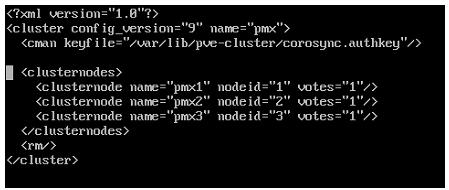
-
Добавьте ограждаюющее (fencing) устройство в соответствии с документацией http://pve.proxmox.com/wiki/Fencing.
Например, мы выбрали ограждающее устройство APC. После добавления ограждающего устройства в кластер нашего примера настройка будет выглядеть так:
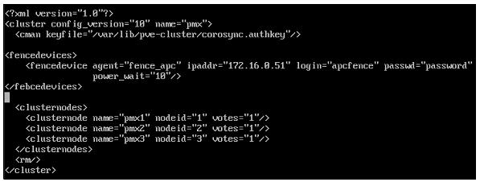
-
Сохраните настройку и перезагрузите узел.
-
Зарегистрируйтесь в графическом интерфейсе Proxmox в качестве root после перезагрузки.
-
Убедитесь что подлежащая настройке виртуальная машина с высокой доступностью окончательно выключена. Состояние HA на странице
Summaryдолжно бытьNoперед добавлением этой виртуальной машины в HA, как это отображено на следующем снимке экрана: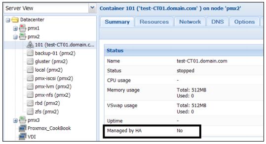
-
Кликните на
Datacenterиз левой панели навигации, затем кликните наHAв меню с закладками. Следующий экранный снимок показывает страницу с текущей настройкой кластера при добавленном устройстве ограждения:HA.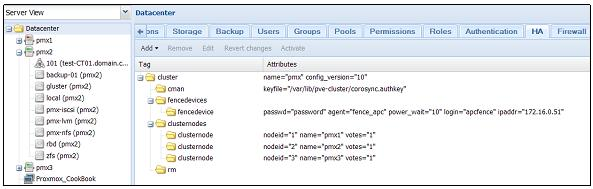
-
Кликните на ниспадающее меню
Addи выберитеHA managed VM/CTдля открытия блока диалога, как показано на следующем снимке экрана. В нашем примере мы добавляем контейнер с идентификатором101в HA: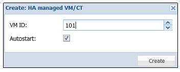
-
Кликните на кнопку
Createдля добавления виртуальной машины в HA. -
Кликните на
Activateдля завершения настройки или кликните наRevert changesдля возврата настройки в прежнее состояние. -
Проверьте что выбранная виртуальная машина теперь настроена с
HAна страницеSummary. Если все хорошо, состояние HA виртуальной машины должно отображатьYes, как это показано на следующем снимке: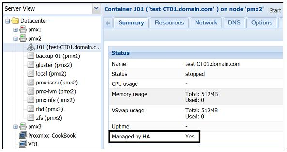
-
Для проверки настройки высокой доступности отключите узел Proxmox с виртуальной машиной и наблюдайте за его запуском на другом узле в кластере.
Есть кое-что еще...
Proxmox HA является отличным способом увеличения максимального времени безотказной работы в случае, когда происходит отказ узла и ИТ-персонал не может решить проблему в срок. Несмотря на преимущества высокой доступности, существует множество виртуальных сред, где эта функция не используется. Например, в большой среде, большое число виртуальных машин на узел может вызвать некоторые проблемы при настроенной высокой доступности. В случае отказа узла в такой среде большое количество виртуальных машин автоматически запустится на других узлах. Если эти узлы не имеют достаточные ресурсы, новые виртуальные машины не смогут перезапуститься.
В некритического среде с меньшими размерами менеджер сети может просто игнорировать функцию высокой доступности и перемещать виртуальные машины только вручную, тем самым, устраняя любую необходимость включения в бюджет устройства ограждения. Применение высокой доступности полностью зависит от требований. Проверьте правильное использование высокой доступности заранее, прежде чем погрузиться в ее применение. Это позволит предотвратить ненужные сложности настройки высокой доступности Proxmox.